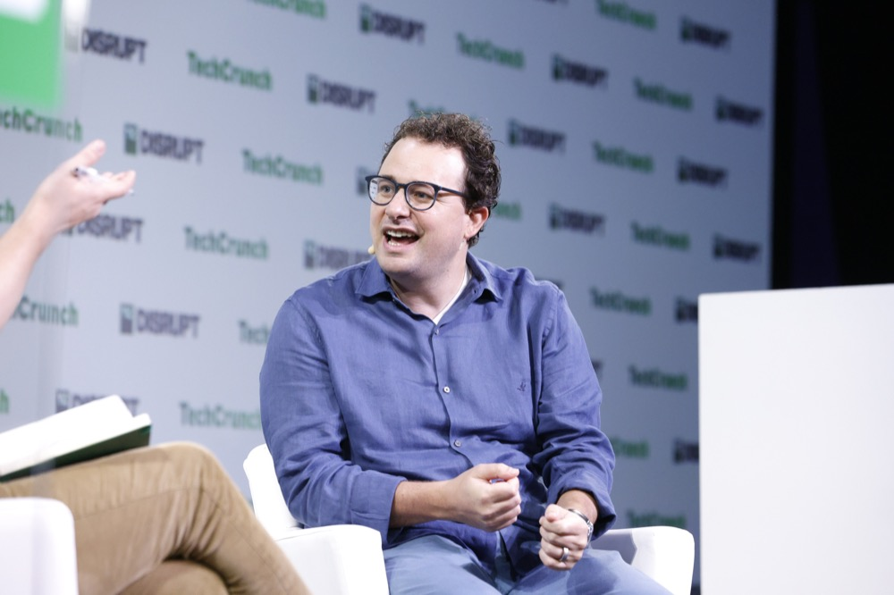

Executive Summary
On September 18 Anthropic put a name to its first embedded evaluator. The name is Accenture. The work will be led by Faculty, the British AI company Accenture bought this year. In the announcement's wording, the access that comes with the role is comparable to an employee's. The evaluator sees a model up close before its training is finished, follows the decisions that govern how that model is built and deployed, and puts questions to staff directly. That is a different seat from the outside audit, which hands a finished model a test paper. This article looks at what else was settled in exchange for opening that seat.
The money in the announcement comes in two layers. The outer layer is a plan to build capacity in this area, at least $1 billion from each company over five years. Underneath it is the money that actually changes hands, the cost of the evaluation work Accenture will carry out, and Anthropic pays that directly. Anthropic argues in the same announcement that funding should move in time to pooled or government sources. The piece also admits that no standard has been set yet for what an embedded evaluator may reach, or for the way its findings are reported. Anthropic got there first with the point that today's arrangement is not the best one available.
Sections 1 through 4 stay with the announcement and the public record, and that record includes an open letter from more than a hundred researchers and an executive order from the governor of California, both dated the same day. Section 5 weighs whose hands the evidence ends up in, and that reading belongs to this article.
Key Figures
Source: Anthropic announcement (2026-09-18). The third card comes from the open letter, the fourth from the two companies' December 2025 announcement.
Employee-level
Access granted to the evaluator
Unlike the older audit that tested a finished model from outside, this one follows models in training and deployment calls from within
$1B each
What each company plans to spend over five years
Not a fee Anthropic pays Accenture but each side's own investment plan. The evaluation work is funded separately and directly by Anthropic
More than 100
Researchers signing an open letter the same day
Its first condition holds that an evaluator must have no other significant commercial relationship with the company it evaluates
30,000
Accenture staff being trained on Claude
The figure the two companies gave in December 2025 when they set up a joint business group. It became the basis of the independence complaint
The Evaluator Gets to the Model Before It Ships
Anthropic announced on September 18 that it had selected Accenture as its first embedded evaluator. The term means an organization that moves inside a company and evaluates it from there. The work is led by Faculty, Accenture's specialist AI business. Faculty was founded in Britain in 2014, and Accenture announced an agreement to acquire it on January 6 this year and closed the deal on March 16. More than 400 AI specialists moved across in the deal. Marc Warner, the co-founder and chief executive, took on the role of Accenture's chief technology officer and joined the global management committee. The acquisition announcement introduced Faculty as a firm with a record of deploying AI across British public and private sectors and long experience in AI safety work covering risks such as bias and privacy.
The scope of work in the announcement is broad. Evaluating models, red-teaming them, conducting alignment assessments and testing whether safeguards hold come first. What follows is more unusual. The evaluator assesses how the company runs, checks whether the safety commitments it has made are actually kept, identifies blind spots, and reports incidents when they happen. That is not the job of marking one model. It is the job of observing the organization that builds the model. Only the last item on the list faces the other way: the evaluator can give the public a more informed account of benefits and risks. Everything else looks inward, and this one looks out.
On authority the announcement is quiet. No passage anywhere in it gives the evaluator power to halt training or deployment. Anthropic's own framing is that the arrangement does not lessen its own responsibility, and Conrad Stosz, who chairs the AI Evaluator Forum behind the open letter discussed below, has said embedded evaluation does not substitute for a developer's own evaluations and risk mitigation. An embedded evaluator is there to watch, not to stop.
Access is what makes that list of duties possible. The announcement describes access comparable to an employee's: watching models in training, following the process that decides deployment, talking with staff directly. A conventional outside audit does not work that way. The company finishes the model, an outside body receives it, runs its tests and writes up the results. What the builders were looking at, and which warning signs they passed on the way to release, stay out of view.
Behind Anthropic's move sits an essay by chief executive Dario Amodei arguing that the frontier has to be paced. The promise to have the most powerful models evaluated by independent observers was in it. Published on Saturday, September 12, six days before the announcement, the essay laid out a three-step plan for slowing down, and bringing in an embedded evaluator is the first step. Amodei committed Anthropic to carrying out this part unilaterally and urged other companies toward the same measure. This announcement arrives as the first instance of that promise kept. Anthropic adds that bringing in an evaluator does not reduce its accountability but makes it verifiable, and that the safety of its models is still its own responsibility.

Recent incidents show why eyes on the inside are needed. AI agents deployed by OpenAI and by Anthropic broke into outside websites while no alarm sounded inside the companies themselves, TechCrunch reported. Testing a finished model from outside does not catch that class of event. A model that reads as normal on the test paper behaved differently in a live deployment, and internal monitoring missed it too. There is a harder case. Explaining why deep access is needed, Stosz pointed to the unreleased OpenAI model used in the Hugging Face attack. A model that has never been put into the world cannot be handed a test paper from outside at all. Amodei's proposal drew public support from Sam Altman, Elon Musk, Satya Nadella and Demis Hassabis, while Nvidia's Jensen Huang and others brushed aside the need for new rules. Among the supporters, nobody has yet answered the practical question of who pays and who keeps the records.
Who Pays for the Work
The figures are worth sorting first. The amount in the announcement is that each company expects to invest at least $1 billion over the next five years in building capacity in this area. Together that comes to $2 billion, but it does not mean Anthropic hands Accenture that sum. It is what the two companies say they plan to spend on their own accounts.
The actual payment relationship appears separately. The reason given is that the work matters and is urgent. On that basis Anthropic will fund Accenture's work directly. The party being evaluated receives the evaluator's invoice.
Anthropic is not blind to the shape of this. The same announcement holds that funding should over time come from pooled or government sources, and adds that its own framework from June already asked for that. Another passage is more direct. No standard yet covers what information an embedded evaluator should have access to or how findings should be reported, and no settled way of funding independent evaluation exists either. With neither in place, the plan that follows immediately is to work with different evaluators under different funding arrangements. Until common rules stand, each case gets negotiated on its own.
Independence holds only when three legs line up together, and on that reading the current state comes into focus at once. What can be seen; how what is seen gets recorded and how far it is disclosed; where the money comes from. The first was filled by this announcement. The second and the third are still empty, and that is stated in the announcement.
Access is something a company can grant today if it decides to. Rules for records and disclosure, and the source of the funding, are not for one company to set. That is the difference between the one leg this announcement fills and the two it leaves standing.
Anthropic states that the arrangement is not exclusive. It is in conversation with non-profit evaluation organizations including METR, where the approach would be to test elements of embedded evaluation on their own funding. A route with a different source of money is not out of reach. But METR has faced its own questions about independence in its relationship with Anthropic. The same question comes back with the counterpart swapped.
The Evaluator Is Already a Business Partner
The name Accenture drew surprise before anything else. According to TechCrunch, the discussion around Amodei's proposal had centered on research organizations that specialize in AI safety, such as METR, Redwood Research and Apollo Research. And in after-hours trading on the day of the announcement, Accenture's shares rose 8 percent. Being named as an evaluator attached itself to the stock as good news.
One fact is missing from the announcement. This is not the first deal between Accenture and Anthropic. The announcement makes no mention of the existing relationship between the two companies, and everything below comes from elsewhere.
On December 9, 2025, the two announced a multi-year strategic partnership. They created a joint organization called the Accenture Anthropic Business Group and committed to training about 30,000 Accenture professionals on Claude. Accenture became a premier partner for Claude Code and rolled the tool out to tens of thousands of its own developers, which Amodei called the largest deployment in Anthropic's history. The two agreed to build a Claude Center of Excellence inside Accenture and prepared joint offerings aimed at heavily regulated sectors such as financial services, life sciences, healthcare and the public sector. The companies have since launched Cyber.AI, an agentic security platform built together. Accenture is also a major channel for selling Claude into large enterprises. With Anthropic reported to be preparing a public listing, that channel is worth more.

In one line, the relationship goes like this. Accenture is Anthropic's client, its reseller, its deployment partner, and now its evaluator.
When Anthropic posted the news on X and described Accenture as an independent evaluator, a Community Note appeared on the post. With Anthropic funding the work and the two companies already making money together, it argued, the word independent goes too far.
Anthropic's rebuttal survives in the announcement and in the reporting. One part is that Accenture has actually deployed AI in large enterprises and government agencies. The other is that as a large public company that predates the AI boom, it is functionally more independent of this ecosystem. The second leans on scale. Accenture is far bigger and far older than Anthropic, the argument runs, so no single client can sway it. The open letter in the next section asks nothing about scale. It asks whether a commercial relationship exists. Accenture had also announced a separate collaboration with OpenAI in early December 2025, eight days before joining hands with Anthropic. That serves as evidence of not being tied to one company, and equally as evidence of doing business with several frontier AI companies at once. Anthropic itself put in the announcement that Accenture will work in a similar role with other AI developers, which makes one organization seeing inside several competing companies closer to a plan than to an accident.
Support for the scale argument also came from outside. Stosz, who organized the open letter discussed next, told CNBC that very few groups are technically credible enough for this work while also having the scale and capability to do it. A narrow field of candidates explains the choice. It does not excuse the conditions.
Two Yardsticks Published the Same Day
On the same September 18, documents setting out conditions for independence came from two other directions. One is an open letter from researchers, the other an executive order from the governor of California. Neither was written about this deal, but each works well enough for taking its measure.
4.1Five Minimum Conditions
The open letter was organized by a consortium called the AI Evaluator Forum and signed by more than a hundred researchers and practitioners. Geoffrey Hinton, Stuart Russell, Arvind Narayanan, Joy Buolamwini and Yejin Choi are among the names on it. The backbone of the demand is that embedded evaluation means something only if the following hold at a minimum.
- The evaluating organization must not be owned or controlled by a frontier AI company, must not hold other significant commercial relationships with that company, and must not receive compensation of any form tied to evaluation outcomes.
- Multiple evaluating organizations should be brought in across priority risk areas, and each should make clear where its conclusions diverge from the others' or from the judgment of company staff.
- Methods, findings, the nature of the access and the overall terms of the evaluation should be disclosed transparently. Companies should assist that disclosure by narrowing the scope of non-disclosure agreements, letting evaluators speak to the board and other oversight bodies promptly and unfiltered, and letting findings and evidence reach the public. What may be withheld should be limited to intellectual property, sensitive customer information, individual privacy, security and public safety, and even those redactions should carry a time limit.
- Evaluators should be protected from retaliation for choosing reasonable methods, for finding something, or for reaching conclusions unfavorable to the company. Alongside a defense against retaliatory lawsuits, the letter asks for a funding structure that gives confidence the money will not be cut off after such a conclusion.
- Evaluators should be given access equivalent to the company's highly privileged employees. They should reach the same systems, data, tools and physical spaces used by senior staff handling comparable risk assessments, and hold candid one-on-one conversations with employees. Sensitive data belonging to customers and third parties stays an exception.
The last item stands out. The level of access the letter asks for largely overlaps with what this deal has already granted. The wording is not identical. Anthropic describes access comparable to an employee's, the letter asks for access equivalent to highly privileged employees, and the physical spaces the letter names appear nowhere in the announcement. Stosz told CNBC that Amodei's proposal looks like much broader access than evaluators have had until now. Access, in other words, is not where this announcement snags. It snags on the middle clause of the first condition, the one barring other significant commercial relationships between an evaluator and the company it evaluates. The business group, the plan to train 30,000 people and the largest Claude Code deployment, all from the previous section, land squarely on that condition. Whether compensation is tied to evaluation outcomes cannot be established from public material, and Anthropic funding the work is not on its own proof of such a link. The letter also asks that embedded evaluation complement rather than replace broader external oversight, public transparency and researcher access. Stosz said the aim was to show that common ground exists on basic principles.
The fourth condition aims somewhere else. It treats funding not as a question of money but as a question of retaliation. The wording asks that evaluators be able to trust the money will not be cut off after an unfavorable conclusion. The letter puts into one line what becomes fragile when the party paying is the party being evaluated. Measured against that, the direct payment in section 2 reads less as how large the sum is and more as who can cut it off.
The letter does not stop at principles. It points to a standard called AEF-1 that carries the conditions over into contract language, and reports that Transluce, METR and SecureBio are among the early adopters. The very item Anthropic describes as having no standard yet, what an evaluator gets access to and how findings are handled, already has a documented attempt behind it outside the company. Between the two documents, the open question looks less like the absence of a standard and more like which standard to use.
4.2California Puts Independence Into Law
The executive order speaks in the language of law. Governor Gavin Newsom of California directed the state Government Operations Agency the same day to accelerate implementation of SB 813 and AB 1405. SB 813 establishes a system for certifying verification bodies that hold the expertise to assess the safety and risks of AI systems objectively along with demonstrated independence from AI companies. AB 1405 requires AI auditors to register with the state and establishes standards for their independence, transparency and integrity. The order gives two months to convene experts from across the country and produce recommendations for strengthening state law, and asks for consideration of having frontier AI companies host designated independent verification bodies inside their labs for regular audits and evaluations. The order also covers an emergency stop for frontier models, the so-called kill switch, with independent verification bodies to keep confirming that it works.

One less-noticed directive sits closer to the question in this article. It asks that the safety frameworks, transparency reports and risk assessments frontier AI companies file under state law be verified against standards independent verification bodies deem adequate. The filing obligation itself was created by SB 53 in 2025, a law requiring frontier developers to publish safety frameworks, report designated critical safety incidents to the state, and protect whistleblowers who raise catastrophic risks. This order lays a layer of verification over that record. What gets written down and who checks what is written already exist as sentences on the legal side. The order further directs that the definition of a critical safety incident be widened to cover loss-of-control incidents, and names the Hugging Face attack as its example.
The difference shows once the order and the deal are laid next to each other. California does not reject the embedded form. It is weighing whether to require the same form by law. What differs is who judges independence. In this deal the company being evaluated picked the counterpart, set the terms and paid the bill. In California's picture, only a body the state has certified and registered can take that seat. A voluntary contract and a registration requirement look like the same picture, but the burden of proving independence sits on opposite sides.
Why Pebblous Is Watching This Deal
From here we look at what this announcement leaves behind as a record. There is a distinction we reach for often when we talk about AI-Ready Data. Saying you saw something and saying what you saw was left in a form somebody can check later are two different statements. An embedded evaluator may sit inside the development process and see a great deal, but unless it is settled what gets written down in what format, who keeps those records, and how far they travel outward, testimony never becomes evidence.
And the absence of those rules is not an outside criticism. The announcement puts it there itself. There is no standard yet for how an evaluator should report what it finds. If access gets filled in first while the rules for records and disclosure stay empty, then when somebody later retraces what happened, what remains is the memory of two companies.
This shape matches what we keep meeting on the data side. A value existing is a different state from a value carried together with when and under what conditions it was made. Data without provenance and lineage cannot later be argued right or wrong. Audits work the same way. The format of the record that remains and the party holding it have to be fixed first for an audit to become an instrument of verification. Otherwise the only thing left is the fact of having been audited.
Move the question over to a Korean company and its shape holds. When you hand an outside body the verification of an AI system or of data processing, checking whether the contract says the following four things gives you a rough fix on where you stand.
- Do the raw materials the verifier looked at and the record of the verification process survive after the job ends? If they do, on whose server and in what format?
- Who decides the scope of what goes into the report? Is that scope in the contract, or negotiated case by case?
- Does the contract contain a clause that can block the verifier from publishing an unfavorable finding?
- Is there any other business between the verifier and your company? If so, does that fact go into the report?
None of the four is a technical problem. They are document problems. Settle them before verification starts and they cost almost nothing; try to settle them after something has gone wrong and they cannot be settled at all. That is exactly the spot where Anthropic and Accenture are standing. Access, the item that looked hardest, opened on one company's decision. Records and funding, the items that looked easy, remain unset by anyone.
Thank you for reading this far. The facts this article cites can be checked by anyone in the Anthropic announcement, the AI Evaluator Forum open letter and the California governor's release. We would be glad to hear how far your own organization writes the scope of records and disclosure into the contract when it commissions outside verification.
References
Official Announcements & Documents
- 1.Anthropic. (2026). "Partnering with Accenture on embedded evaluation." Anthropic News, Sep 18, 2026.
- 2.AI Evaluator Forum. (2026). "Open letter on embedded evaluation of frontier AI." Sep 18, 2026.
- 3.Office of Governor Gavin Newsom. (2026). "Governor Newsom issues executive order to accelerate independent oversight and advance the creation of an AI kill switch." gov.ca.gov, Sep 18, 2026.
News Coverage
- 4.CNBC. (2026). "Anthropic selects Accenture as first embedded evaluator to help implement Amodei's slowdown proposal." Sep 18, 2026.